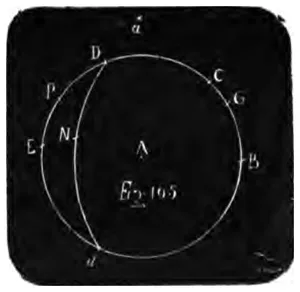

Book XII: Problems by Approximation¶
Libro Duodecimo: Problemi per approssimazione (§§ 193–280)
Mascheroni’s tour de force of applied precision geometry (§§ 193–280, pp. 120–151, folios 0145–0176): twelve chord equations for dividing circles into sexagesimal degrees, arc-minutes, and French 400-grad decimal divisions (§§ 193–266), followed by astonishingly accurate compass solutions to the classic transcendental and cubic problems — rectifying the quadrant (\(\pi/2\)), squaring the circle (\(\sqrt{\pi}\)), cubing the sphere, and duplicating through octuplicating the cube (\(\sqrt[3]{2}\) to \(\sqrt[3]{8}\), reaching two-millionths accuracy in § 276 Sol. II!).
§§ 193–214: Fundamental Chord Equations & Sexagesimal Degrees
§§ 193–214 (folio 0145–folio 0151, pp. 120–126). Because angles such as \(1^\circ\) or \(1'\) cannot be constructed algebraically by straightedge and compass (angle trisection is cubic), Mascheroni turns the master points of Book II Fig. 12 (\(a, b, e, \dots\)) into an ultra-high-precision compass engine.
§§ 215–235: The Twelve Logarithmic Graduation Equations
§§ 215–235 (folio 0152–folio 0158, pp. 127–133). Mascheroni systematically pairs the exact radical points of Fig. 12 (\(a, b, e, \dots\), involving \(\sqrt{2}\), \(\sqrt{5}\), and \(\sqrt{2 \pm \sqrt{2}}\)) to assemble twelve factored trigonometric equations formatted specifically for logarithmic table computation (e.g., Equation [10] on folio 0155: \(\sin E = 4\sin\frac{A-30^\circ}{2}\cos\frac{A+30^\circ}{2}\sin 67^\circ 30'\)). Each single compass transfer maps a known constructible arc into a dense web of precision targets.
§§ 236–266: Arc-Minutes & French 400-Grad Decimal Circle
§§ 236–249 (folio 0159–folio 0163, pp. 134–138). Step-by-step compass recipes for dividing astronomical limbs down to \(1^\circ\), \(10'\), \(5'\), and \(1'\)—for example § 249 (folio 0163) yields an arc of \(5'\) with error less than \(1'''\) (\(\frac{1}{60}\) of an arc-second)!
§§ 267–272: Circle Rectification, Radian Arc & Squaring (√π)
§§ 267–268. Problem (Fig. 101, folio 0168, p. 143). Find a chord Bb approximately equal to one quarter of the circumference (\(\pi/2\)) by compass alone.

§§ 273–280: Sphere Cubature & Cube Duplication (∛2 through ∛8)
§§ 273–275 (Figs. 105–106, folio 0172–folio 0173, pp. 147–148). Cubature of the Sphere: constructs the cube edge equal in volume to a unit sphere (\(PG = 1.6122696\) vs. \(\sqrt[3]{\frac{4}{3}\pi} = 1.611991\), error \(< 0.0003\), § 273) and inversely the sphere radius equal in volume to a unit cube (\(LM = 0.6195986\) vs. \(0.6203504\), error \(< 0.0008\), § 274).